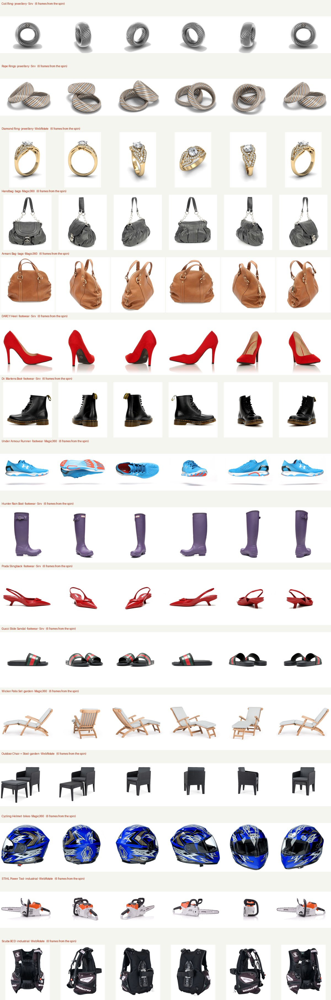

Candidate inputs for the next reconstruction round — pulled from real photographic 360° turntable spins, six evenly-spaced frames each. One fixed object, angle-only variation: identity-consistent multi-view by construction. Nothing here has been reconstructed yet — this is the sign-off step.
The honest sourcing picture: mainstream retail storefronts have largely dropped drag-spins (Zappos, Reebok = static galleries now) or lock them behind video / bot-walls (James Allen, Home Depot, West Elm). Homeware spins came up empty for *photography* (only CGI). So these are real-product photographic spins hosted on spin-vendor demo CDNs (Sirv, Magic360, WebRotate) and turntable-studio portfolios — real turntables of real rings, bags, shoes and outdoor furniture. Coverage: jewellery, bags, footwear, garden, bikes and industrial. Only soft furnishings and homeware are true blanks — no photographic spin exists to extract there (those categories have moved to CGI/3D configurators).
